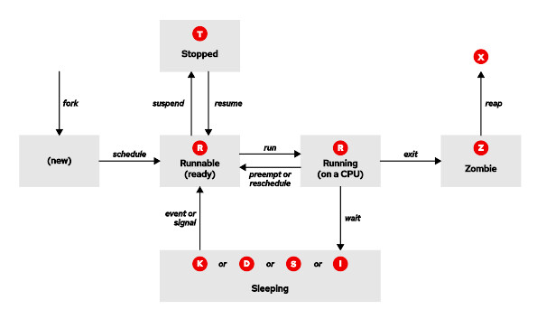
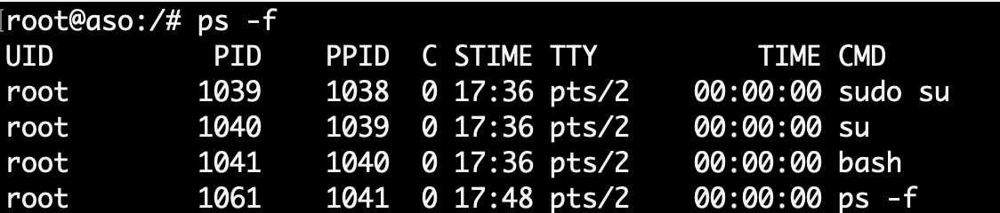
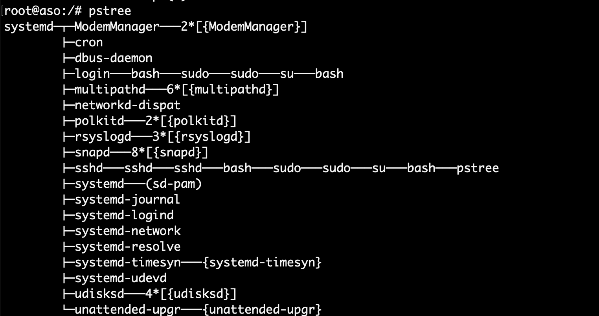
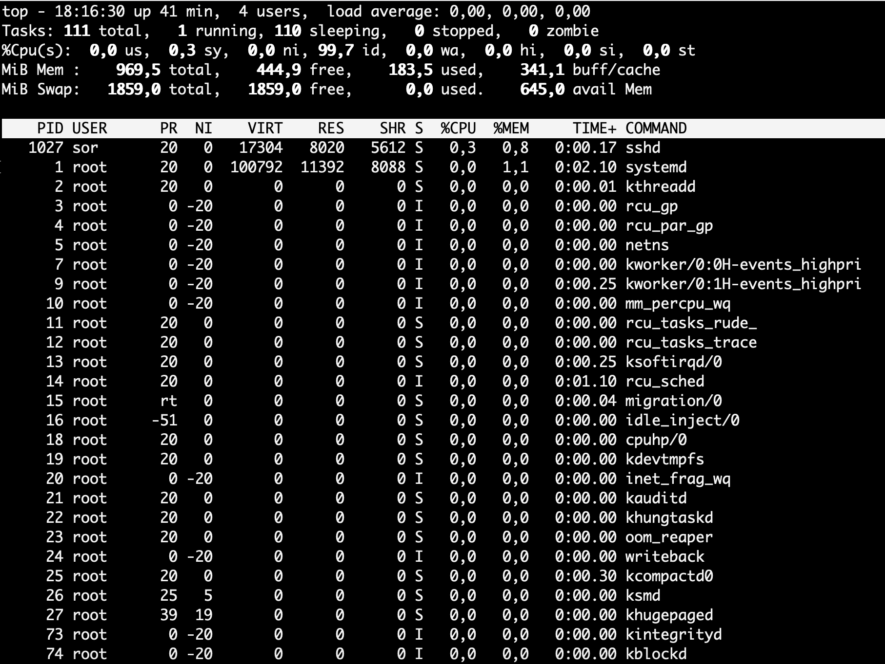

Administración de procesos, servicios y automatización de tareas¶
Programación de Aula¶
Resultados de Aprendizaje¶
Esta unidad cubre el Resultado de aprendizaje 2 (RA2) según el Real Decreto 1629/2009, de 30 de octubre, el cual es:
- Administra procesos del sistema describiéndolos y aplicando criterios de seguridad y eficiencia.
Los criterios de evaluación asociados son:
- Se han descrito el concepto de proceso del sistema, tipos, estados y ciclo de vida.
- Se han utilizado interrupciones y excepciones para describir los eventos internos del procesador.
- Se ha diferenciado entre proceso, hilo y trabajo.
- Se han realizado tareas de creación, manipulación y terminación de procesos.
- Se ha utilizado el sistema de archivos como medio lógico para el registro e identificación de los procesos del sistema.
- Se han utilizado herramientas gráficas y comandos para el control y seguimiento de los procesos del sistema.
- Se ha comprobado la secuencia de arranque del sistema, los procesos implicados y la relación entre ellos.
- Se han tomado medidas de seguridad ante la aparición de procesos no identificados.
- Se han documentado los procesos habituales del sistema, su función y relación entre ellos.
Planificación Temporal (5 sesiones / 10 horas)¶
| Sesión | Contenido |
|---|---|
| 1 | Administración de procesos: definición, estados y principales comandos |
| 2 | Comandos para la gestión de procesos |
| 3 | Control de servicios y daemons |
| 4 | Automatización de tareas |
| 5 | Ampliación y refuerzo |
1. Introducción¶
En esta unidad trabajaremos la administración de procesos, servicios del sistema y la automatización de tareas.
2. Administración de procesos¶
2.1 Definición de proceso¶
Información
Un proceso es una instancia de un programa en ejecución. Cada vez que ejecutas un comando o abres una aplicación, el sistema operativo crea un proceso correspondiente para llevar a cabo la tarea.
El sistema dispondrá de una Tabla de procesos, conocida como el Bloque de Control de Procesos (BCP o Process Control Block en inglés) donde guarda la información relevante de cada proceso. En Linux encontraremos la siguiente información:
| Campo | Descripción |
|---|---|
| PID (Process ID) | Identificador único del proceso. |
| PPID (Parent PID) | Identificador del proceso padre. |
| Estado del proceso | El estado actual del proceso (ejecutándose, dormido, zombie, etc.). |
| Contador de programa | Dirección de la siguiente instrucción a ejecutar (PC, Program Counter). |
| Registros del CPU | Estado de los registros del procesador (acumulador, índice, puntero, etc.). |
| Prioridad | Valor que determina la prioridad del proceso para su ejecución. |
| Memoria asignada | Información sobre la memoria asignada al proceso (segmentos de código, datos, y pila). |
| Tabla de descriptores de archivos | Lista de archivos abiertos por el proceso y sus descriptores. |
2.2 Descripción de los estados del proceso¶
Un proceso puede estar en diferentes estados como:

- Running (R):
- El proceso se está ejecutando en ese momento o está listo para ejecutarse.
- Sleeping (S):
- El proceso está inactivo, esperando la finalización de una operación o un evento (por ejemplo, espera de entrada/salida).
- Se clasifica en dos tipos:
- Interrumpible (S): Puede ser despertado por señales externas o eventos. Aparece como S
- No interrumpible (D): No puede ser interrumpido hasta que complete lo que está esperando (generalmente se usa para operaciones de E/S en dispositivos). Se muestra como D
- Stopped (T):
- El proceso está detenido, normalmente por una señal como SIGSTOP o mientras se está depurando con un debugger. Aparece como T
- Zombie (Z):
- El proceso ha terminado su ejecución, pero su entrada en la tabla de procesos no ha sido limpiada del todo y sigue teniendo la identidad del proceso (PID). Aparece como Z.
- Traced o suspendido (T):
- Similar al estado detenido, pero ocurre cuando un proceso está siendo depurado. se muestra también como T en algunas versiones del Kernel.
- Dead (X):
- Un estado transitorio, en el que el proceso ha terminado de ejecutarse y está en proceso de ser elminado del sistema.
2.3 Comandos en Linux para la gestión de procesos¶
Cada vez que invocamos un comando, se inician uno o más procesos. Un administrador de sistemas no solo necesita crear procesos, sino también poder realizar un seguimiento de ellos y enviarles diferentes tipos de señales si es necesario. En este apartado veremos el control del trabajo y cómo monitorear los procesos.
A continuación se muestra una tabla resumen de comandos para la gestión de procesos:
| Comando | Descripción |
|---|---|
| jobs | Lista los procesos en segundo plano y suspendidos en la terminal actual. |
| bg | Envía un proceso suspendido al segundo plano para que continúe ejecutándose. |
| fg | Trae un proceso en segundo plano al primer plano. |
| & | Operador para ejecutar un comando en segundo plano, permitiendo continuar usando la terminal. |
| ps | Muestra una lista de procesos en ejecución en el sistema. |
| pstree | Muestra los procesos en forma de árbol, mostrando la relación de padre-hijo entre procesos. |
| top | Muestra los procesos en tiempo real, ordenados por consumo de recursos como CPU y memoria. |
| htop | Similar a top, pero con una interfaz interactiva y colorida (requiere instalación previa). |
| kill | Envía una señal a un proceso para detenerlo o finalizarlo, usando su PID. |
| killall | Finaliza todos los procesos que coincidan con un nombre específico. |
| nice | Inicia un proceso con una prioridad específica (valor de "niceness" ajustado). |
| renice | Cambia la prioridad de un proceso que ya está en ejecución. |
| nohup | Ejecuta un comando ignorando la señal de cierre de sesión, útil para tareas de larga duración. |
| lsof | Lista los archivos abiertos por los procesos, útil para ver qué archivos están en uso. |
2.3.1 El comando ps¶
El comando ps proporciona información sobre los procesos que se están ejecutando en el sistema. Si escribimos en el terminal ps, obtendremos como salida un listado de los procesos lanzados con el usuario actual que aún se están ejecutando.

Las columnas que se muestran cuando ejecutamos el comando ps significan:
- La primera columna es el PID o identificador de proceso. Cada proceso tiene un asociado identificador que es único, es decir que no puede haber dos procesos con el mismo identificador.
- La segunda columna nos informa del terminal en el que se está ejecutando el proceso. Si aparece una interrogación (?), el proceso no tiene asociada ninguna terminal.
- La tercera columna indica el tiempo total que ha estado ejecutándose el proceso.
- La cuarta columna es el nombre del proceso.
Parámetros/modificadores ps¶
- -e devuelve un listado de todos los procesos que se están ejecutando.
- -f devuelve un listado extendido. En este último caso veremos en pantalla el PPID del proceso (identificador del proceso padre) y la hora en la que se ejecutó el proceso (STIME).

Resultado comando ps -f- -ef obtendríamos un listado extendido de todos los procesos que se están ejecutando en el sistema.
- -u informa de los procesos lanzado por un determinado usuario. De tal forma que si escribimos “ps -u alumno”, aparecerá un listado de los procesos que está ejecutando el usuario alumno.
2.3.2 El comando pstree¶
El comando pstree visualiza, en forma de árbol, todos los procesos del sistema, de esta forma se puede ver las relaciones que existen entre los procesos.

2.3.3 El comando top¶
El comando top devuelve un listado de los procesos de forma parecida a como lo hace ps, con la diferencia que la información mostrada se va actualizando periódicamente lo que nos permite ver la evolución del estado de los procesos.
En la parte superior se muestra la siguiente información adicional:
- El espacio en memoria ocupado por los procesos.
- El espacio ocupado por la memoria de intercambio o swap.
- El número total de tareas o procesos que se están ejecutando.
- El número de usuarios o el porcentaje de uso del procesador.

2.3.4 Procesos en primer plano y segundo plano¶
Los procesos pueden ejecutarse en primer plano (Foreground) o segundo plano (Background).
-
El proceso que está en primer plano es aquel con el que se interactúa. Si ejecutamos, por ejemplo, el comando
ls -l, se mostrará por pantalla el resultado, y hasta que no acabe de mostrarse el listado no podremos ejecutar ningún otro comando. -
Un proceso en segundo plano añadiendo el símbolo ampersand (&) al final del comando. Cuando se ejecuta un proceso en segundo plano, se permite al usuario iniciar y trabajar con otros procesos.
Ejemplo:
Para ver que trabajos se están ejecutando en segundo plano, se usa el comando jobs.

Pasar procesos en segundo plano a primer plano
Para pasar procesos en segundo plano a primer plano, se utiliza el comando fg, seguido de %n, donde n es el número de proceso que queremos pasar a primer plano.

Pasar procesos en primer plano a segundo plano
El comando bg permite pasar procesos desde primer plano a segundo plano.
- Para pasar un proceso que se encuentra en primer plano a segundo plano, debemos suspenderlo primero utilizando la combinación de teclas Ctrl+Z. Cuando se pulsa esa combinación de teclas, el proceso en ejecución se para y no vuelve a ejecutarse hasta que se pasa a primer o segundo plano.
Con bg %n pasaremos el proceso a segundo plano.

2.3.5 El comando kill para finalizar procesos¶
Para finalizar un proceso se utiliza el comando kill, que tiene la siguiente sintaxis:
Si, por ejemplo, queremos eliminar un proceso con PID 17122, tendríamos que escribir: kill 17122.
Puede que en ocasiones el proceso no finalice al emplear el comando kill sin parámetros. Para matar un proceso asegurándonos de que no ignorará la petición de finalizar su ejecución se emplea el parámetro -9.
Hay un total de 32 señales que se pueden enviar a los procesos. Las más utilizadas son las siguientes:
kill -1 (Sighup). Reinicia el proceso.
kill -9 (SigKill). Mata el proceso.
kill -15 (SigTerm). Termina el proceso.
Por otra parte, el comando killall nombre_programa finaliza todos los procesos que estén ejecutando el programa.
2.3.6 El comando nice¶
Ejecuta un comando con una prioridad distinta a la de por defecto.
Solo los usuarios root pueden establecer prioridades urgentes (negativos).
Sintaxis:
2.3.7 El comando renice¶
El comando renice nos permite modificar la prioridad una vez que el proceso ya está en ejecución
donde identificadores se corresponde con:
- un conjunto de ids de proceso (pid) si no se especifica parámetro o se precede por -p
- un conjunto de id de grupo de proceso si se precede por -g
- un conjunto de usuarios si se precede por -u.
Los usuarios que no sean el superusuario sólo pueden bajar la prioridad de sus procesos, es decir, aumentar su niceness (en el rango de 0 a 19). El superusuario (root) puede ajustar la prioridad de cualquier proceso usando un valor nice del rango completo (-20 a 19).
Ejercicios de procesos¶
Tarea
-
Lista los procesos que se están ejecutando en el shell actual.
-
Lista los procesos que se están ejecutando en el sistema.
-
Crea dos usuarios y abre dos consolas con esos usuarios. Haz que cada uno ejecute un script diferente. Déjalos en un punto en el que esté pidiendo un dato. Vuelve a utilizar el comando ps y comprueba cómo se refleja lo que están haciendo el resto de usuarios y el estado de los procesos del usuario1 y usuario2.
-
Haciendo uso del comando grep y ps, lista todos los procesos que se están ejecutando en el sistema y terminan en .sh
-
Visualiza los procesos utilizando el comando pstree.
-
Comprueba qué proceso está consumiendo más recursos utilizando top.
-
Mata el proceso del script que está ejecutando el usuario 1.
-
Vuelve al usuario 1 y comprueba que ha salido al prompt del usuario.
- Crea un script de nombre procesos.sh que muestre todos los procesos activos y que permita aumentar o disminuir la prioridad de un proceso.
- Crea un script de nombre matar_procesos.sh que muestre todos los procesos activos y permita matar un proceso especificando su PID.
Tarea
Ejercicios de procesos — Red Hat Academy

Para esta práctica trabajarás con el material del Capítulo 8 — Monitoreo y gestión de procesos en Linux de Red Hat Academy: Administración de Sistemas en Red Hat I (RH124) 9.3.
Accede al portal de Red Hat Academy e inicia el entorno de laboratorio. Completa las siguientes secciones:
| Sección | Tipo | Duración |
|---|---|---|
| Introducción | Lectura | 3 min |
| Estados del proceso y ciclo de vida | Lectura + Cuestionario | 20 min |
| Control de trabajos | Lectura + Ejercicio guiado | 25 min |
| Finalización de procesos | Lectura + Ejercicio guiado | 30 min |
Duración total estimada: 78 minutos.
Elabora una memoria con todos los comandos aprendidos y el resultado del laboratorio de prácticas.
3. Administración de los servicios del sistema¶
3.1. Concepto de Servicios en Linux¶
Información
Un servicio en Linux es un proceso que se ejecuta en segundo plano, sin interacción directa del usuario, y que proporciona funciones o funcionalidades esenciales al sistema o a los usuarios.
Algunos ejemplos comunes incluyen servidores web (como Apache o Nginx), servicios de base de datos (MySQL, PostgreSQL), y servicios de red (SSH, FTP).
3.2. Sistema de Inicio y Administración de Servicios¶
Linux tiene varios sistemas de inicio (init systems) que administran los servicios y procesos de arranque. Algunos de los sistemas de inicio más comunes incluyen:
- SysVinit: Uno de los sistemas de inicio más antiguos, basado en scripts de shell que se ejecutan en secuencia para iniciar servicios.
- Upstart: Un sistema de inicio más avanzado que reemplazó a SysVinit en algunas distribuciones, diseñado para trabajar con eventos.
- Systemd: Actualmente el sistema de inicio más utilizado en distribuciones modernas, que gestiona servicios mediante unidades y soporta arranque paralelo, lo que lo hace más eficiente y rápido que SysVinit y Upstart.
Cada uno de estos sistemas tiene comandos y prácticas distintas para gestionar servicios. Hoy en día, systemd es el sistema más común, por lo cual es el que estudiaremos a continuación.
3.3 Administración de Servicios con Systemd¶
Systemd es un sistema de administración de servicios que organiza los servicios mediante archivos de configuración llamados unidades (units), que se encuentran en la ruta /etc/systemd/system o /lib/systemd/system. Cada unidad representa un servicio, un dispositivo o una tarea de administración.
Principales Comandos de Systemd¶
systemctl es el comando principal para gestionar servicios en systemd. Algunos comandos básicos son:
| Comando | Tarea |
|---|---|
| systemctl status nombre_servicio | Ver información detallada sobre el estado de una unidad. |
| systemctl stop nombre_servicio | Detener un servicio en un sistema en funcionamiento. |
| systemctl start nombre_servicio | Iniciar un servicio en un sistema en funcionamiento. |
| systemctl restart nombre_servicio | Reiniciar un servicio en un sistema en funcionamiento. |
| systemctl reload nombre_servicio | Volver a cargar el archivo de configuración de un servicio en ejecución. |
| systemctl mask nombre_servicio | Deshabilitar el inicio (tanto manual como durante el proceso de arranque) de un servicio. |
| systemctl unmask nombre_servicio | Poner un servicio enmascarado a disposición. |
| systemctl enable nombre_servicio | Configurar un servicio para que se inicie durante el proceso de arranque. Use la opción --now para iniciar también el servicio. |
| systemctl disable nombre_servicio | Deshabilitar el inicio de un servicio durante el proceso de arranque. Use la opción --now para detener también el servicio. |
Comprobación del Estado de Todos los Servicios¶
Para verificar el estado de todos los servicios, se puede usar:
Tarea
Ejercicios de control de servicios y daemons — Red Hat Academy

Para esta práctica trabajarás con el material del Capítulo 9 — Control de servicios y daemons de Red Hat Academy: Administración de Sistemas en Red Hat I (RH124) 9.0.
Accede al portal de Red Hat Academy e inicia el entorno de laboratorio. Completa las siguientes secciones:
| Sección | Tipo | Duración |
|---|---|---|
| Introducción | Lectura | 3 min |
| Identificación de procesos del sistema iniciados en forma automática | Lectura + Ejercicio guiado | 25 min |
| Control de servicios del sistema | Lectura + Ejercicio guiado | 25 min |
| Control de servicios y demonios | Laboratorio | 15 min |
Duración total estimada: 70 minutos.
4. Automatización de tareas.¶
Automatizar tareas regulares en el sistema mediante la programación de trabajos (o Jobs) es una práctica esencial para un buen administrador. Esto permite configurar y ejecutar automáticamente trabajos importantes, como copias de seguridad, actualizaciones del sistema, y otras actividades rutinarias. Para ello, se puede utilizar la función cron, que es especialmente útil para gestionar y programar la ejecución periódica de tareas de forma eficiente.
4.1 Programar trabajos con Cron¶
Información
En sistemas Linux, cron es un demonio que se ejecuta de forma continua y se activa cada minuto para revisar un conjunto de tablas en busca de tareas programadas. Estas tablas, conocidas como crontabs, contienen los llamados cron jobs.
Cron es ideal para servidores y sistemas que permanecen encendidos constantemente, ya que cada tarea programada solo se ejecuta si el sistema está operativo en el momento especificado. Tanto los usuarios normales como el usuario root pueden utilizar cron, y cada usuario dispone de su propio crontab, mientras que root gestiona los crontabs a nivel del sistema.
Crontabs de usuario¶
Los crontabs de usuario son archivos de texto que administran la programación de los trabajos cron definidos por cada usuario. Estos archivos llevan el nombre de la cuenta del usuario que los creó, aunque su ubicación exacta varía según la distribución (generalmente en un subdirectorio de /var/spool/cron).
Cada línea en un crontab de usuario contiene seis campos, separados por espacios, que representan:
- El minuto de la hora (0-59).
- La hora del día (0-23).
- El día del mes (1-31).
- El mes del año (1-12).
- El día de la semana (0-7, donde 0 o 7 representan el domingo).
- El comando a ejecutar.
Para el mes y el día de la semana, también se puede utilizar una abreviatura de tres letras en lugar del número correspondiente.
Los primeros cinco campos definen cuándo se ejecutará el comando especificado en el sexto campo, y pueden aceptar uno o varios valores. Para definir estos valores en cron, se pueden utilizar los siguientes operadores:
*(asterisco): Acepta cualquier valor en el rango del campo.,(coma): Permite enumerar varios valores específicos.-(guión): Define un rango de valores consecutivos./(slash): Establece intervalos en el rango (escalonados).
Creación de de un crontab de usuario
El comando crontab -e se utiliza para editar su propio archivo crontab o para crear uno si aún no existe.
$ crontab -e
no crontab for frank - using an empty one
Select an editor. To change later, run 'select-editor'.
1. /bin/ed
2. /bin/nano < ‑‑‑‑ easiest
3. /usr/bin/emacs24
4. /usr/bin/vim.tiny
Choose 1-4 [2]:
Si quiere ejecutar el script espacio.sh ubicado en su directorio principal todos los días a las 10:00 am, puede agregar la siguiente línea a su archivo crontab:
Además de la opción -e mencionada anteriormente, el comando crontab tiene otras opciones útiles:
-l
Muestra el crontab actual en la salida estándar.
-r
Quita el crontab actual.
-u
Especifica el nombre del usuario cuyo crontab necesita ser modificado. Esta opción requiere privilegios de root y permite que el usuario root edite los archivos crontab de otro usuario.
Crontabs de sistema¶
Los crontabs del sistema son archivos de texto que gestionan la programación de los trabajos de cron a nivel de sistema y solo pueden ser editados por el usuario root. El archivo /etc/crontab y todos los archivos dentro del directorio /etc/cron.d son considerados crontabs del sistema.
Además, la mayoría de las distribuciones incluyen los directorios /etc/cron.hourly, /etc/cron.daily, /etc/cron.weekly y /etc/cron.monthly, que contienen scripts que se ejecutan con la frecuencia correspondiente. Por ejemplo, para ejecutar un script diariamente, basta con colocarlo en /etc/cron.daily.
Muchas distribuciones incluyen el archivo /etc/crontab, que puede utilizarse como referencia para la estructura de un archivo cron. A continuación, se muestra un ejemplo de /etc/crontab de una instalación Debian:
SHELL=/bin/sh
PATH=/usr/local/sbin:/usr/local/bin:/sbin:/bin:/usr/sbin:/usr/bin
# Example of job definition:
# .---------------- minute (0 - 59)
# | .------------- hour (0 - 23)
# | | .---------- day of month (1 - 31)
# | | | .------- month (1 - 12) OR jan,feb,mar,apr ...
# | | | | .---- day of week (0 - 6) (Sunday=0 or 7) OR sun,mon,tue,wed,thu,fri,sat
# | | | | |
# * * * * * user-name command to be executed
Ejemplo de un crontab de sistema
Si queremos ejecutar el script espacio.sh ubicado en el directorio /root todos los días a la 01:30 am, puede abrir /etc/crontab con su editor preferido y agregar la siguiente línea:
4.2 Programar trabajos con at¶
Información
El comando at se utiliza para la programación de tareas una única vez y sólo requiere que se especifique cuándo se deba ejecutar una tarea en el futuro.
Después de introducir at en la línea de comandos, seguido de la especificación de tiempo, entrará en la línea de comandos at donde puede definir los comandos a ejecutar. Puede salir del prompt con la secuencia de teclas Ctrl+D.
$ at now +5 minutes
warning: commands will be executed using /bin/sh
at> date
at> Ctrl+D
job 12 at Sat Sep 14 09:15:00 2019
El ejemplo anterior simplemente ejecuta el comando date después de cinco minutos.
Listar tareas programadas con atq¶
Ahora programemos dos tareas más: la primera ejecuta el script foo.sh a las 09:30 am, mientras que la segunda ejecuta el script bar.sh después de una hora.
$ at 09:30 AM
warning: commands will be executed using /bin/sh
at> ./foo.sh
at> Ctrl+D
job 13 at Sat Sep 14 09:30:00 2024
$ at now +2 hours
warning: commands will be executed using /bin/sh
at> ./bar.sh
at> Ctrl+D
job 14 at Sat Sep 14 11:10:00 2024
Para listar sus tareas pendientes, puede usar el comando atq que muestra la siguiente información para cada tarea: ID, fecha de ejecución, tiempo de ejecución, cola y nombre de usuario.
Borrar tareas con atrm¶
Si desea borrar una tarea de at, puede usar el comando atrm seguido del ID de la tarea. Por ejemplo, para borrar el trabajo con ID 14, puede ejecutar lo siguiente:
Ejercicios de automatización de tareas¶
Tarea
Ejercicio1. Conceptos teóricos básicos
Responde a las siguientes cuestiones acerca de la automatización de tareas en Linux:
- ¿Cuál es la principal diferencia entre cron y at?
- ¿Que diferencia hay entre crear un trabajo en un cron de usuario y un cron de sistema?
- Si deseamos programar un trabajo para un usuario ordinario. ¿Qué comando ejecutamos?
- Cuando un usuario necesite consultar sus tareas programadas, ¿Qué comando debe ejecutar?
- ¿Qué comando podemos utilizar para eliminar las tareas programadas para el usuario actual?
Explica el significado de las siguientes especificaciones de tiempo para un archivo crontab:
| Archivo crontab | Significado |
|---|---|
| 15 14 * * 1-5 | |
| 00 09-18 * * * | |
| */30 * * * * | |
| 0,20,40 14 * * fri |
Ejercicio 2 Crea una tarea programada para que el ordenador se apague todos los días a las 14:15
Ejercicio 3 Crea una tarea programada todos los viernes a las 14:00, que ejecute un comando para obtener el espacio en disco utilizado y envíe por correo electrónico la información indicada.
Ejercicio 4 Crea una tarea programada para que hoy a las 17:00 se realice una copia de seguridad de todos los datos del usuario alumno.
Reto
Ejercicio 5 (Avanzado) Realiza el ejercicio anterior, pero utilizando las unidades Timers de Systemd
Tarea
Ejercicios de automatización de tareas — Red Hat Academy

Para esta práctica trabajarás con el material del Capítulo 2 — Programación de tareas futuras de Red Hat Academy: Administración de sistemas en Red Hat II (RH134) 9.0.
Accede al portal de Red Hat Academy e inicia el entorno de laboratorio. Completa las siguientes secciones:
| Sección | Tipo | Duración |
|---|---|---|
| Introducción | Lectura | 3 min |
| Programación de un trabajo de usuario diferido | Lectura + Ejercicio guiado | 25 min |
| Programación de un trabajo de usuario recurrente | Lectura + Ejercicio guiado | 25 min |
| Programación de trabajos del sistema recurrente | Lectura + Ejercicio guiado | 30 min |
| Gestión de archivos temporales | Lectura + Ejercicio guiado | 30 min |
| Programación de tareas futuras | Cuestionario | 5 min |
Duración total estimada: 120 minutos.
5. Práctica grupal¶
Tarea
PG1 — Evolución de los sistemas de inicio en Linux: de SysVinit a Systemd
Objetivo: Comprender la evolución de los sistemas de inicio en Linux, desde los métodos tradicionales basados en scripts hasta los modernos sistemas paralelos y centralizados. El grupo debe ser capaz de comparar SysVinit, Upstart y Systemd, y explicar cómo cambió la forma de gestionar servicios en GNU/Linux.
El trabajo debe incluir entre 9 y 13 diapositivas con diseño limpio, visual y profesional, cubriendo los siguientes apartados:
1. Introducción
- Qué es un sistema de inicio (init system).
- Función principal: iniciar, detener y monitorizar servicios.
- Por qué Linux necesitó evolucionar en este aspecto.
2. SysVinit
- Cómo funciona: scripts en
/etc/init.d/y runlevels. - Principales comandos (
service,chkconfig,telinit). - Ventajas e inconvenientes.
3. Upstart (sistema de transición)
- Qué fue Upstart y quién lo desarrolló (Ubuntu, 2006).
- Enfoque basado en eventos del sistema (event-driven init).
- Ventajas respecto a SysVinit y razones por las que fue sustituido.
- Distribuciones que lo usaron y hasta qué año (Ubuntu 9.10–14.10).
4. Systemd
- Filosofía de diseño: unidades (units), targets, dependencias.
- Ventajas clave (arranque paralelo, control unificado,
journalctl). - Comandos fundamentales (
systemctl,journalctl,hostnamectl,timedatectl). - Estructura básica de un archivo
.service.
5. Comparativa general
- Tabla de equivalencia de comandos (SysVinit vs Systemd).
- Diferencias en rendimiento, gestión y registro de eventos.
- Rol de Upstart como sistema intermedio.
6. Casos prácticos
- Ejemplo real o simulado de gestión de servicios (
systemctl start,enable,status...). - Demostración de un servicio personalizado o cambio de target.
7. Conclusiones
- Qué sistema se usa hoy en Debian, Ubuntu, Fedora, RHEL, etc.
- Ventajas de Systemd en la administración actual.
- Opinión crítica del grupo sobre su complejidad y papel en Linux moderno.